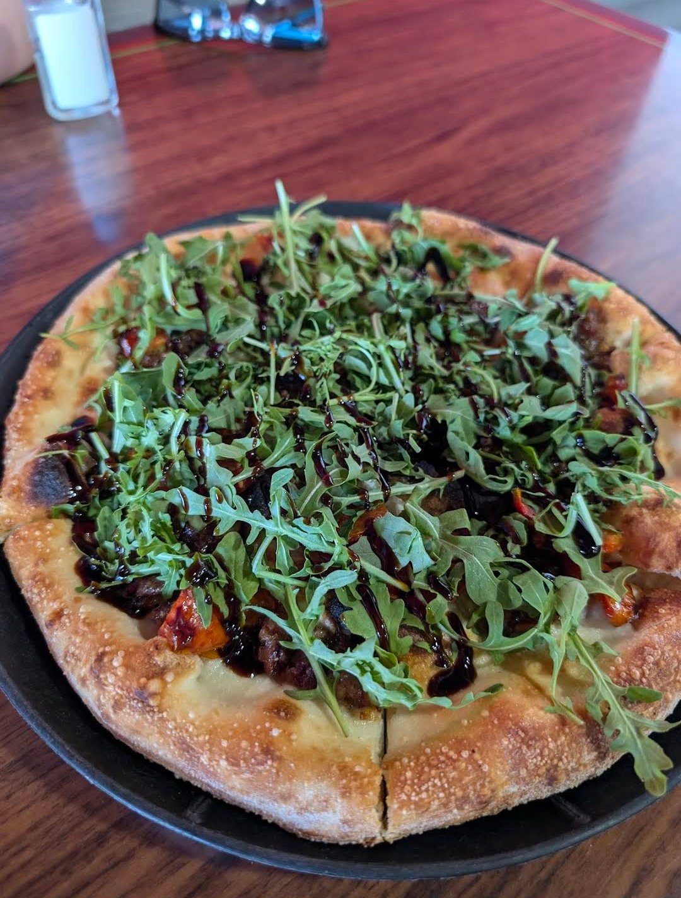
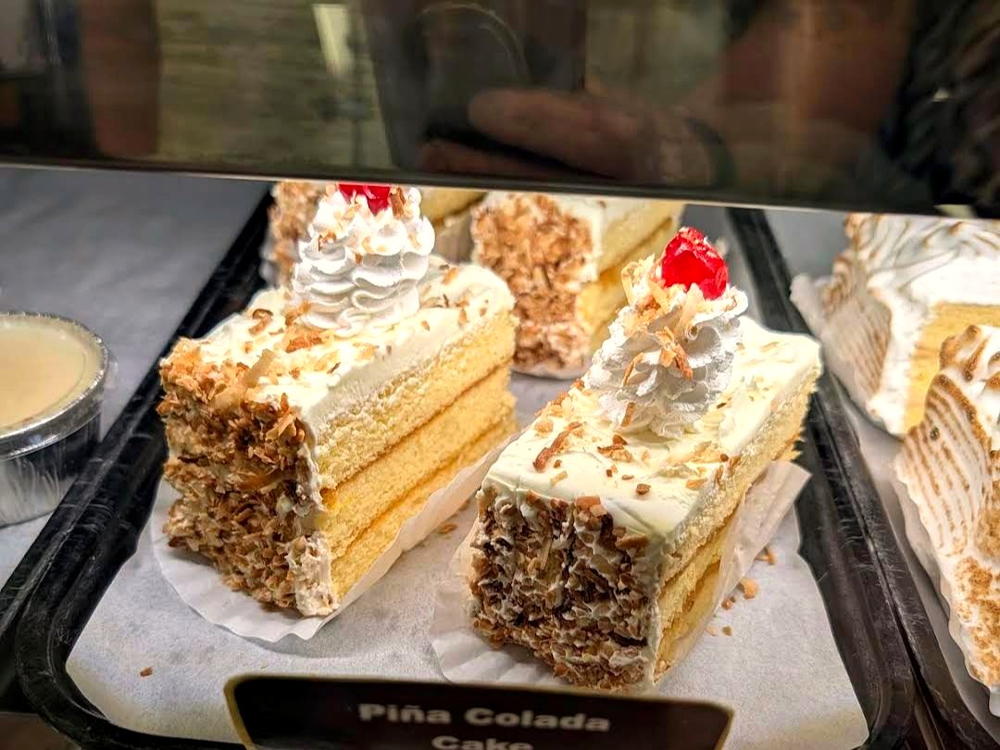
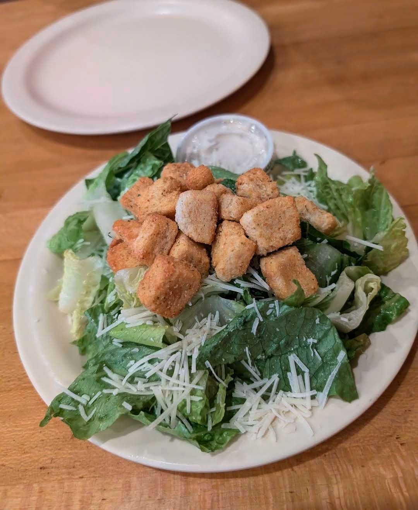
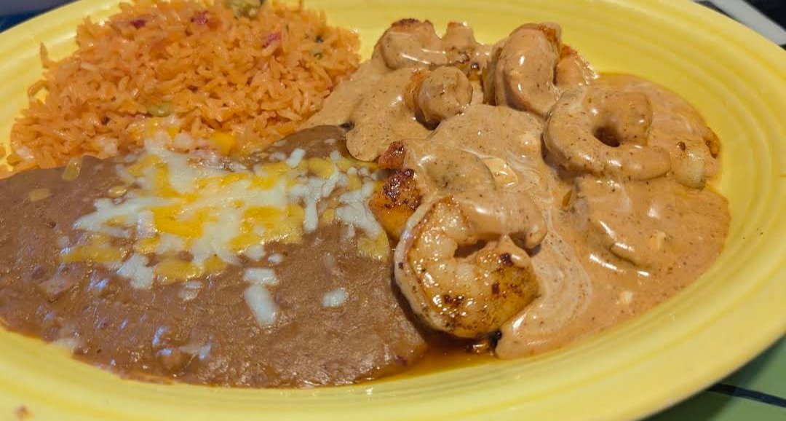
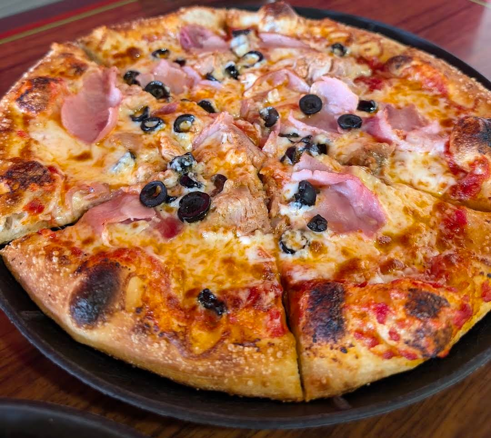
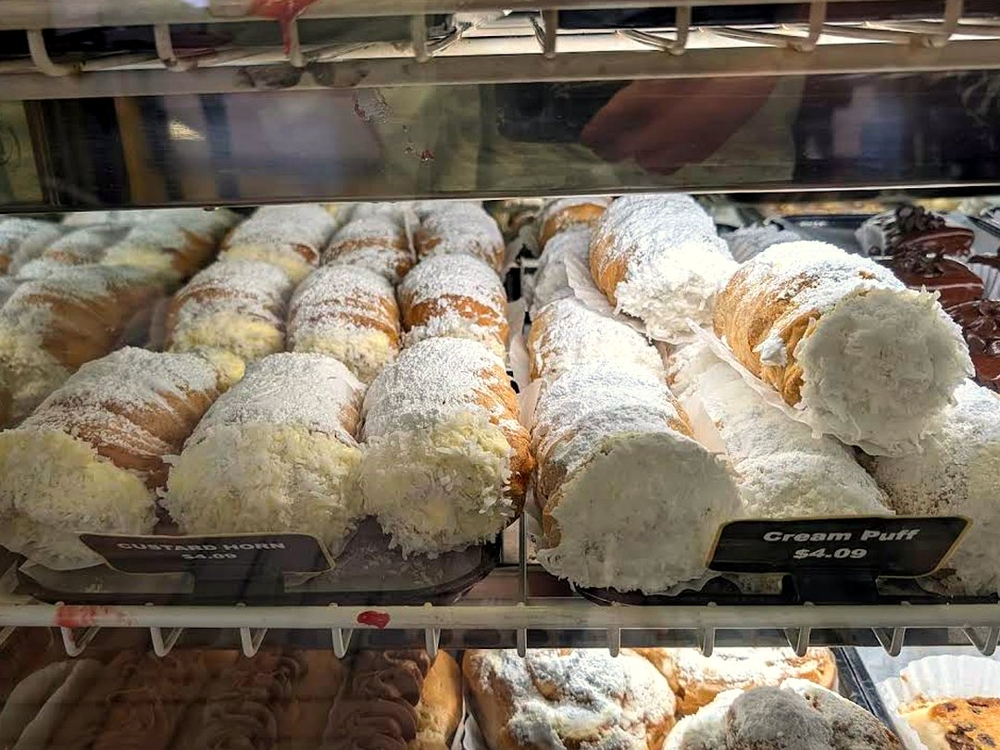
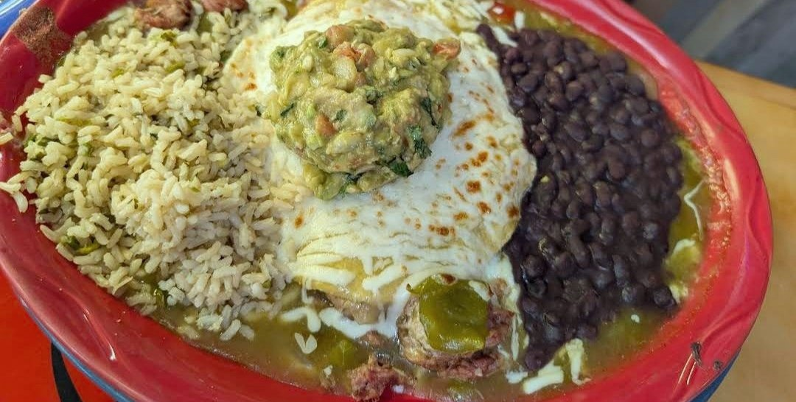
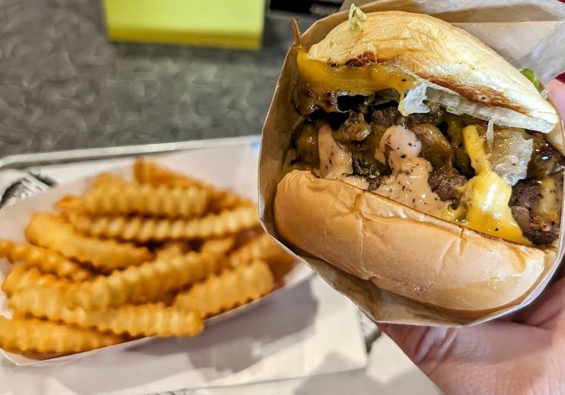
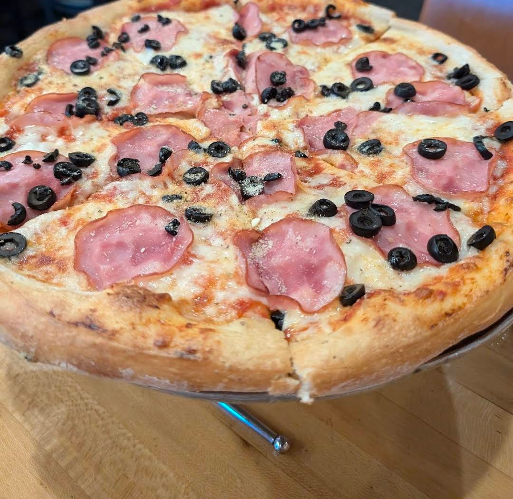

Travel Eats
Where I've Been
Trying new food is half the reason I travel. Here's everywhere I've been, mapped.
Photos
From My Travels



















Trying new food is half the reason I travel. Here's everywhere I've been, mapped.








